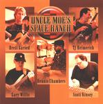

| Artist: | Brett Garsed/TJ Helmerich/Gary Willis/Dennis Chambers/Scott Kinsey |
| Title: | Uncle Moe's Space Ranch |
| Label: | Tone Center TC 40162 |
| Length(s): | 61 minutes |
| Year(s) of release: | 2001 |
| Month of review: | [01/2001] |
| 1) | Colliding Chimps | 6.17 |
| 2) | Tjhelmerich@earthlink.net | 7.04 |
| 3) | Swarming Goblets | 7.14 |
| 4) | SighBorg | 7.22 |
| 5) | He's Havin' All That's His To Be Had | 7.16 |
| 6) | Minx | 9.09 |
| 7) | I Want A Pine Cone | 6.42 |
| 8) | A Thousand Days | 5.30 |
tjhelmerich@earthlink.net starts off in a far more peaceful way, bring out the jazzy parts. After a couple of minutes somebody starts killing off a guitar, though. This creates some sound effects which made me check whether something was wrong with the disc, however, since the timer continued without flinching, so it might have been the music. Since I'm not quite sure, though, you can judge for yourselves from the sample. After the sad demise of the guitar, the bass takes over, apparently giving the guitar courage to return to the front of the stage. The track ends with a truce.
Swarming goblets has more of a feel you would find in seventies jazzrock, with some pretty long guitar soloing that's not all that challenging (on me as a listener). I'm not too impressed with this attempt.
SighBorg is somewhat rock oriented, with some hefty soloing going on once more. As you might expect from the title, this track has somewhat more electronics thrown in, although I would still call it a guitar track. In the latter stages of the track the drummer gets to blow off some steam, for not too apparent reasons. Still the track is pretty good.
He's havin' all that's his to be had is another one of those guitar soloing tracks, with some throbbing bass lines and loads of hi-hats. After this the track moves into a duel between guitar and keyboard, from which the guitar emerges the winner, to go off into another solo.
Starting off with bass the track moves into some fluent guitar playing, far more melodic than the fusionish solos from previous tracks. Following this is some more fusionish guitar soloing, interspersed with some electronics. This track balances out okay, with the guitar solos on one hand and the electronics on the other.
I want a pine cone starts with a guitar melody that reminds me of Bolero a lot, but moves on from that into a more blended track. Strong bass, a wahwah-ish sound even, and of course the normal guitar sound. At the beginning and end of the track some LP effects are blended in.
A thousand days, the only track to be written by the two guitarists only, is, of course, a guitar fest. Definitely a track with a seventies jazzrocky feel. After starting off in a somewhat mellow way, they gain speed.
The combination of the tongue in cheek titles and the first two tracks set my expectations a little higher than realistic, I'm afraid. And case you're wondering about the lengths of the tracks not adding up to the total disc length... Guess what that means. Don't get your hopes up, though, they are two tongue in cheek tracks (ah, so they are on the album) that appear to be recorded live. Not all that interesting.
If you're into those seventies jazzrock guitarists, this would be a nice way to hear what they would sound like nowadays.